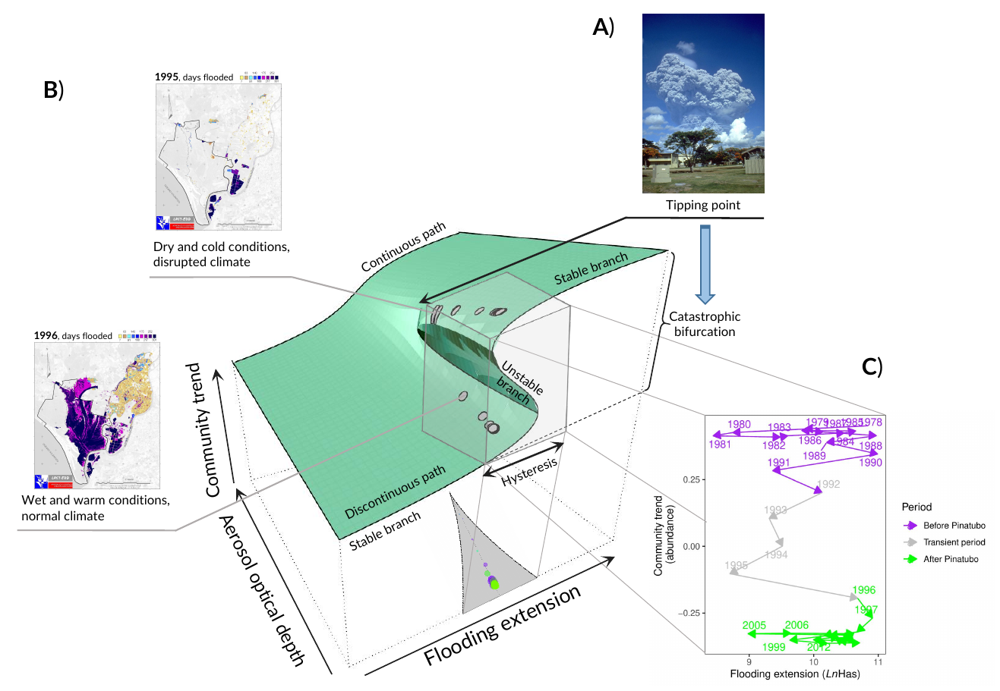

Pablo Almaraz, Andy J. Green (2024) Catastrophic bifurcation in the dynamics of a threatened bird community triggered by a planetary-scale environmental perturbation. Biological Conservation 291: 110466, DOI: 10.1016/j.biocon.2024.110466
Open code and data

Abstract
Ecological modeling has been traditionally dominated by a focus on the asymptotic behavior, but transient dynamics can have a profound effect on species and community persistence. We show a strong non-stationary coupling of ecological drivers in one of the world’s major Mediterranean ecosystems, Doñana wetlands, which is currently threatened by many stressors. Recurrent changes in precipitation fluctuations triggered sudden reorganizations in community trends and population dynamics of a guild of ten wintering waterfowl species during a 36-year period. An anomalously dry and cold transient period in the Northern Hemisphere, induced by the volcanic eruption of Mt. Pinatubo in 1991, prompted an abrupt shift to an alternative regime of fluctuating species densities. Most species did not recover previous values even though local weather patterns and large-scale climatic conditions returned to normal values. Although the dynamical stability of the community is similar in both regimes, structural stability declined: the probability of feasibility dropped across time due to depressed population densities at equilibrium. A stochastic cusp catastrophe model fitted to the time series data suggests that the spatio-temporal persistence of cold and dry conditions in the wintering areas, coupled with warm and wet conditions in the breeding grounds, modulated local ecological conditions and induced hysteresis through behavioral shifts to alternative wintering sites. Our study provides empirical evidence for the existence of a catastrophic bifurcation triggered by a tipping point in the dynamics of an imperiled vertebrate community, highlighting the relevance of history and multi-stability in explaining current patterns in biological conservation.
Important figure
Diagram depicting the three-dimensional representation of the stochastic cusp catastrophe model fitted to the major community trend (z-axis, Trend 1), as a function of the stratospheric aerosol optical depth (bifurcation parameter) and flooding extension (asymmetry parameter). The fitted values plotted in the maximum-likelihood cusp equilibrium surface (in green) are depicted as gray circles. In A), the tipping point (the cusp) of the model is represented by the eruption of Mt. Pinatubo of Philippines in April 2, 1991. As a press-type perturbation, it triggered a transient period of dry and cold wintering conditions in the Southern Palaearctic that lasted until 1995 (Robock (2002)). Before the tipping point, fluctuations in waterfowl community abundance were located in the upper stable branch of the surface. In B), the small figures show maps of the numbers of days of flooded conditions in Doñana wetlands for two distinct years: 1995, at the end of transient period characterized by dry and cold wintering conditions; and 1996, a climatically normal year, with wet and warm conditions (see Fig. 2). The dynamic in year 1995 was evolving in the unstable (transient) branch of the surface. From 1996 onwards, the dynamics settled in the lower stable branch. The magnitude of the catastrophic bifurcation triggered by the tipping point is thus the difference in height between the two stable branches, while the size of the region of hysteresis is the amplitude of the stable states of waterfowl community abundance sharing the same environmental conditions. The gray cube in the fitted cusp surface, with height equal to the size of the catastrophic bifurcation, and width equal to the size of the hysteresis region, contains all the dynamics of the system, that takes place along the discontinuous paths. The bifurcation set is projected as a gray shadow in the floor of the cusp 3D surface, with the cusp as a critical point in the vertex. This set is represented in 2-dimensions in C), were the implicit temporal dynamics of the community abundance trend evolves with respect to the asymmetry parameter, namely flooding extension, from the first stable state (purple arrows) to the second stable state (green arrows) through the transient, unstable period (gray arrows). Flooding data provided by the LAST-EBD; Pinatubo public domain image from Richard P. Hoblitt, USGS. (For interpretation of the references to colour in this figure legend, the reader is referred to the web version of this article.)

Data and code
The project is reproducible with R code available at GitHub and Zenodo. Follow the instructions there to install all supporting files and R packages.
Citation
@article{Almaraz2024,
title = {Catastrophic bifurcation in the dynamics of a threatened bird community triggered by a planetary-scale environmental perturbation},
volume = {291},
doi = {10.1016/j.biocon.2024.110466},
pages = {110466},
journaltitle = {Biological Conservation},
author = {Almaraz, Pablo and Green, Andy J},
date = {2024-03}
}